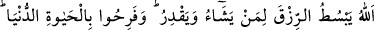
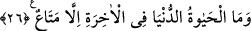

günü onun ne farzını ne de nâfilesini kabul eder.”[135] Bu rivâyet el-Esrâru’l-
Muhammediyye’de geçmektedir.
Vefâ ve ahd iyi olur eğer öğrenirsen
Aksi halde kimi görsen cevr ve zulmetmeyi bilir
Bilesin ki iki türlü lânet vardır. Biri cennetten kovulma, öbürü yakınlık ve vuslat
sahasından kovulmaktır. İlki kâfirler içindir. İkincisi ise nâkıs mü’minler içindir.
Bu bakımdan kim ubûdiyyette eksiklik gösterir ve istîdad arzında fesâd çıkarmaya
çalışırsa, görünüşte cennetlerde bile olsa ayrılık ve hicran yurdundadır. Görünüşte nice
kâmil vardır ki mânâda nâkıstır. Bunun aksi de geçerlidir.
Molla Câmî der ki:
Sûretin noksanlığından mânâ ehline ne gam!
Canı rum/beyaz olanın, teni Habeş/siyah olsa ne zarar
Görmez misin ki İbrahim (a.s.) ateşe atılınca ateş serin ve esenlik hâline geldi. Onun
görünüşte ateşte, Nemrud’un ise görünüşte nimette olması, ne İbrahim’e zarar verdi ne
de Nemrud’a fayda sağladı. Aksine Nemrud nimet içinde cezâ; yani nikmet buldu.
Allah Teâlâ’dan bizi cennet, kurbet (Hakk’a yakınlık) ve vuslat ehlinden kılmasını
niyaz ederiz.
26. Allah dilediğine rızkı bollaştırır da daraltır da. Onlar dünya hayatıyla
şımardılar. Oysa âhiretin yanında dünya hayâtı, geçici bir faydadan başka bir şey
değildir.
Sadece “Allah” açıp genişletmeyi “dilediğine rızkı bollaştırır da” dünyada rızkı
genişletir de “daraltır da.” Yani, dilediklerine rızkı daraltıp sadece yetecek kadar rızık
verir, fazlasını vermez.
Sanki şöyle denilmiştir: “Eğer Allah’a verdikleri sözü bozanlar dünyada lânetlenmiş
ve âhirette azâba dûçâr edilmiş olsalardı, dünyada Allah onlara nimetlerin ve
lezzetlerin kapılarını açmazdı.” Buna şöyle cevap verilmiştir:
“Dünyada rızk kapısını açıp-kapamanın küfür ve îmanla alâkası yoktur. Aksine bu,
sadece Allah’ın dilemesiyle ilgilidir. Bu bakımdan Allah sırf sabrını denemek,
günahlarını bağışlamak ve derecesini yükseltmek için mü’minin rızkını kısabilir.
Nitekim ashabın çoğunun mârûz kaldığı darlık bu kabildendir. Allah, istidrac/yavaş
yavaş helâke götürmek yani istidrâc için kâfire de bol rızk verebilir. Kureyş kâfirlerinin
çoğunun içinde yaşadığı bolluk da bu kabildendir.